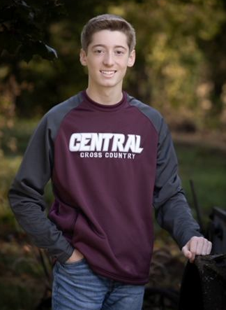
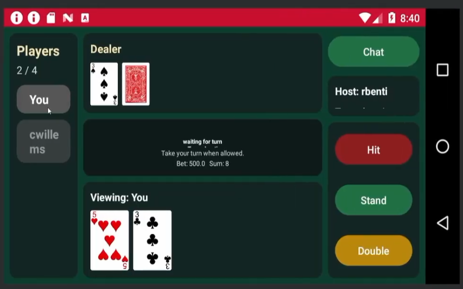

Software Engineering Student | Iowa State University
I am a Software Engineering student at Iowa State University and an aspiring software engineer. I enjoy building things that people actually use, from web applications to embedded and game projects, and I am especially interested in how good user interface design makes software easier to use for normal users.

CyBet is a casino platform built by a four person team for COMS 3090 (Software Development Practices). It pairs an Android front end written in Java with a Spring Boot REST backend using JPA/Hibernate over a MySQL database. Users can create accounts, add friends, message each other in DMs and group chats, earn achievements, climb leaderboards, and play casino games including blackjack, slots, and Crazy Eights. My main contributions were the blackjack game and the real time multiplayer table system, where players host and join tables over WebSockets, plus the group chat messaging screens. The team worked out of a GitLab repository with a branch per issue workflow, merge request reviews, a CI pipeline, JavaDoc, and JaCoCo test coverage reports.
You can reach me at collinw2024@gmail.com